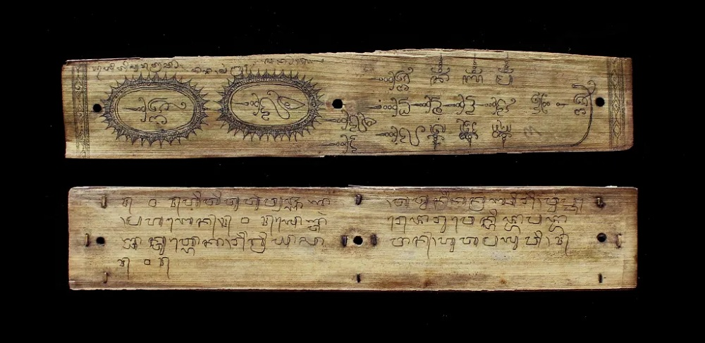

Home > Blog The Log of a Librarian > The Shape of Memory (03)
The Shape of Memory (03)
The Book That Must Be Tended
Palm Leaves, Written Memory, and the Labor of Preservation
This post is part of a series that explores the many ways human societies have stored, transmitted, and transformed memory across time, beyond the narrow histories centered on books and writing. It approaches archives, documents, and memory systems as historically situated technologies shaped by power, ecology, material conditions, and cultural worldviews, while examining forms of transmission often excluded from dominant narratives of literacy and preservation: oral traditions, woven patterns, musical structures, ritual performances, landscapes, bodies, and other living infrastructures of memory. Check all the posts in this section's index.
Beyond the Stability of Writing
Histories of the book often treat writing as a threshold of stability. Once memory is written down, it seems to acquire a more durable body. A written document can be stored, copied, transported, cited, cataloged, and preserved. Writing appears to protect memory from the uncertainty of speech, performance, and embodied transmission.
Manuscripts written on palm leaves complicate that assumption.
Across parts of South and Southeast Asia, prepared palm leaves served for centuries as one of the major supports for written texts. They were used in Buddhist, Hindu, Jain, Islamic, courtly, scholarly, medical, ritual, literary, legal, and administrative contexts. But these traditions were not uniform. A South Indian Sanskrit manuscript, a Sri Lankan ola text, a Balinese lontar, and a Burmese kammavācā manuscript do not belong to a single undifferentiated world. They differ in script, language, function, preparation, decoration, custody, and use.
What they share is a documentary condition: writing does not make them self-preserving.
A leaf manuscript may carry sacred, scholarly, practical, legal, poetic, or ritual authority, but its material support remains organic. It can split, warp, darken, attract insects, suffer mold, lose flexibility, or break at the binding holes. Its survival depends not only on inscription, but on preparation, handling, storage, repair, copying, custody, and competent reading.
The importance of these manuscripts for the history of the book lies there. They show that written memory may remain fragile, and that preservation is not a property automatically granted by writing.
A Book Made from Leaves
Palm-leaf manuscripts were usually produced from prepared leaves of palms such as palmyra or talipot, depending on region and practice. The leaves were cut, processed, dried, sometimes polished, and shaped into long narrow folios. Unlike the codex, organized around folded gatherings and a spine, this book form is built from a sequence of separate horizontal leaves.
In many traditions, letters were incised with a stylus rather than applied with ink in the ordinary pen-on-paper sense. A darkening substance could then be rubbed over the surface and wiped away, leaving the incisions visible. The written line was therefore also a material intervention. The letter entered the surface through pressure, incision, and contrast.
The leaves were commonly pierced with one or more holes and held together by cord. Wooden boards could protect the upper and lower surfaces. Cloth wrappings, boxes, shelves, temple libraries, monastic collections, family repositories, courtly collections, and later institutional libraries formed part of the wider ecology in which these manuscripts survived.
This structure changes the act of reading. The manuscript is not opened like a modern printed book. It is unwrapped, loosened, handled, read folio by folio, and kept in sequence through the relation between leaves, holes, cord, covers, and memory. Its order is visible, but vulnerable. Leaves can be misplaced. Cords can break. Covers can be separated from their contents. A manuscript may survive as a fragment, a disordered stack, or an object no longer readable to the community that once used it.
The form teaches the problem. This is a written book whose continuity depends on alignment, custody, and handling.
South India: Scholarship on a Fragile Surface
In South India, palm-leaf manuscripts formed part of a long and complex scholarly world. Sanskrit, Tamil, Malayalam, Grantha, Telugu, Kannada, and other linguistic and script traditions were involved in the production and transmission of texts. These manuscripts carried religious works, philosophical treatises, grammatical materials, commentaries, ritual manuals, medical knowledge, astrology, poetry, and technical learning.
Their role cannot be reduced to the preservation of "old books." They belonged to intellectual systems in which copying, commentary, teaching, memorization, and interpretation worked together. A text could live through manuscripts, but also through teachers, students, reciters, scribes, scholastic lineages, temple institutions, households, and libraries.
The fragile support did not prevent textual continuity. It shaped it. When a manuscript became worn or damaged, a text could be copied onto new leaves. Continuity often depended not on one object surviving unchanged, but on disciplined renewal.
Here, preservation is not simply the protection of a thing. It is the continuation of a practice.
Sri Lanka: The Ola Manuscript as Conservation Problem
In Sri Lanka, palm-leaf manuscripts are often referred to as ola manuscripts. They form a major part of the island's documentary heritage and include Buddhist, medical, astrological, historical, ritual, legal, literary, and other materials. Many are held in libraries, monasteries, temples, private collections, and family contexts.
The ola manuscript makes care concrete. In a tropical climate, heat, humidity, insects, mold, dust, and mechanical stress can affect organic materials continuously. A manuscript may not disappear through one dramatic act, but through slow damage: a split leaf, a missing folio, a darkened surface, a loosened cord, an insect channel, a storage box placed in unsuitable conditions.
This shows the distance between possession and preservation. To hold a manuscript is not necessarily to preserve it. Its survival depends on storage, inspection, environmental care, cataloging, conservation decisions, and careful handling.
Modern conservation adds another layer. Preservation cannot simply repeat inherited treatments without question. Substances historically applied to leaves may not be suitable in every present condition. Repair, boxing, digitization, access, and handling must respond to the condition of each object and to its cultural meaning.
The ola manuscript is therefore not only a text. It is a custodial problem. Its survival depends on decisions about use, access, repair, description, and responsibility.
Bali: Lontar and the Visible Labor of Memory
In Bali, palm-leaf manuscripts are known as lontar. They are among the most recognizable manuscript forms in Island Southeast Asia: long narrow leaves, often incised with Balinese script, bound into bundles, protected with covers, and associated with a wide range of textual traditions.
Balinese lontar may contain religious texts, ritual instructions, mantras, calendars, genealogies, literary works, traditional medical knowledge known as usadha, law codes, architectural knowledge, poetry, narrative materials, and other forms of local learning. Some manuscripts are ordinary in use; others are sacred or restricted. Some are textual; others include drawings or narrative illustrations.
The term lontar is useful because it prevents the discussion from remaining too general. It points to a specific manuscript world in which written leaves participate in religious life, calendrical reckoning, healing, literature, and social memory.
A lontar can survive physically while becoming culturally weakened. The leaves may remain, but if the script is no longer widely read, if the ritual setting changes, if the custodial line breaks, or if the manuscript is removed from its community of use, survival becomes partial. Digitization can preserve images of the leaves, but it does not automatically preserve the full practice of reading, recitation, consultation, or authority.
Bali makes the central point sharper: the manuscript is not active because it is old. It remains active when the practices around it continue.
Myanmar: Kammavācā and the Ritual Manuscript
Burmese kammavācā manuscripts offer a useful boundary case. They are associated with Buddhist monastic ritual, especially passages from the Vinaya used for ceremonies such as ordination. They are often visually striking, with lacquer, gilding, decorated boards, and formalized Pāli text.
They must be treated carefully here because not all kammavācā manuscripts are simple palm-leaf objects. Some are written on palm leaf, while others use prepared cloth, ivory, metal, or other materials shaped in relation to the palm-leaf format. Still, they are useful because they show that a manuscript's documentary force may exceed ordinary reading. A kammavācā object is connected to monastic life, ritual authority, ordination, merit, display, donation, and the aesthetics of sacred writing. Its authority lies not only in the words it contains, but in the ritual and institutional world in which those words operate.
To conserve such an object is not only to stabilize a surface. It is to encounter a manuscript whose writing, decoration, use, and sacred status are intertwined.
What Care Preserves
These examples do not produce a single tradition. They show a family of related documentary problems.
In South India, fragile supports participated in scholarly copying, teaching, commentary, and textual renewal. In Sri Lanka, ola manuscripts make preservation visible as an environmental, institutional, and ethical task. In Bali, lontar shows how written leaves can remain tied to ritual, literary, calendrical, medical, and social knowledge. In Myanmar, kammavācā manuscripts show how text, material form, decoration, and ritual authority can become inseparable.
Across these cases, the same mistake must be avoided: treating writing as preservation by itself.
Writing gives memory a surface, but not a guarantee. A leaf can carry a sacred text and still crack. A medical work can survive physically while becoming unreadable. A ritual manuscript can be conserved as an object while losing part of the world that once activated it. A digitized image can extend access while flattening touch, sequence, weight, restricted use, and ritual handling.
Care preserves more than material. It preserves order, readability, access, authority, and the possibility of use. When those relations break, the manuscript may remain, but its documentary life changes.
The question is not only whether the manuscript survives — it is what kind of survival is being produced.
The History of the Book as a History of Maintenance
Leaf manuscripts invite a revision of documentary history because they make visible something that many book forms conceal: preservation is not only material survival. It is continued attention.
A written leaf can preserve language, doctrine, law, poetry, medicine, ritual, or history. But the text remains available only while practices continue around it. The manuscript survives not because it escapes decay, but because decay is anticipated and answered.
This changes how documents should be understood. A document is not only an object carrying information. It is also the material and social arrangement that allows that information to remain meaningful, authoritative, and transmissible.
The history of the book, then, cannot be reduced to the history of formats. It must also be a history of maintenance: preparation, inscription, storage, handling, repair, copying, access, teaching, recitation, and custody.
These gestures are the quiet labor through which written memory survives. A book does not endure because it has been written. It endures because it is tended.
Bibliography
- Agrawal, Om Prakash (1984). Conservation of Manuscripts and Paintings of South-East Asia. London: Butterworths.
- British Library. (2017). Kammavaca: Burmese Buddhist Ordination Manuscripts. British Library Asian and African Studies Blog.
- Cabral, Udaya, and Rathnabahu, R. M. Nadeeka. (2021). Report on the Best Practices for Conservation of Palm-Leaf Manuscripts in Sri Lankan Libraries. Colombo: IFLA PAC Centre, National Library of Sri Lanka.
- Guy, John. (1982). Palm-Leaf and Paper: Illustrated Manuscripts of India and Southeast Asia. Melbourne: National Gallery of Victoria.
- Hinzler, H. I. R. (1986-1987). Catalogue of Balinese Manuscripts in the Library of the University of Leiden and Other Collections in the Netherlands. Leiden: E. J. Brill / Leiden University Press.
- Rath, Saraju (ed.) (2012). Aspects of Manuscript Culture in South India. Leiden: Brill.
- Van der Meij, Dick. (2017). Indonesian Manuscripts from the Islands of Java, Madura, Bali and Lombok. Leiden: Brill.
- Van Dyke, Yana. (2009). Sacred Leaves: The Conservation and Exhibition of Early Buddhist Manuscripts on Palm Leaves. The Book and Paper Group Annual, 28, pp. 83-99.
- Wiland, Julia et al. (2022). A Literature Review of Palm Leaf Manuscript Conservation. Part 1: A Historic Overview, Leaf Preparation, Materials and Media, Palm Leaf Manuscripts at the British Library and the Common Types of Damage. Journal of the Institute of Conservation, 45 (3), pp. 236-259.
- Wiland, Julia et al. (2023). A Literature Review of Palm Leaf Manuscript Conservation. Part 2: Historic and Current Conservation Treatments, Boxing and Storage, Religious and Ethical Issues, Recommendations for Best Practice. Journal of the Institute of Conservation, 46 (1), pp. 64-91.
- Wujastyk, Dominik. (2014). Indian Manuscripts. In Jörg B. Quenzer, Dmitry Bondarev, and Jan-Ulrich Sobisch (eds.) Manuscript Cultures: Mapping the Field. Berlin: De Gruyter, pp. 159-182.